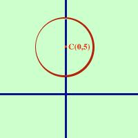

|
In tal caso a = 0 e l'equazione della circonferenza diventa x2+ y2 + by + c = 0 Poiche' le coordinate del centro sono: xo = -a/2 yo = -b/2 Si avra' xo = 0 Cioe' se manca il termine ax la circonferenza ha il centro su un punto dell'asse delle y (equazione x=0) Esempio, considero la circonferenza:  x2+ y2 -10y + 16 = 0 il centro vale xo = -a/2 = 0 yo = -b/2 = 5 ed il raggio vale r = = E' la circonferenza di centro C(0,5) e raggio 3 |